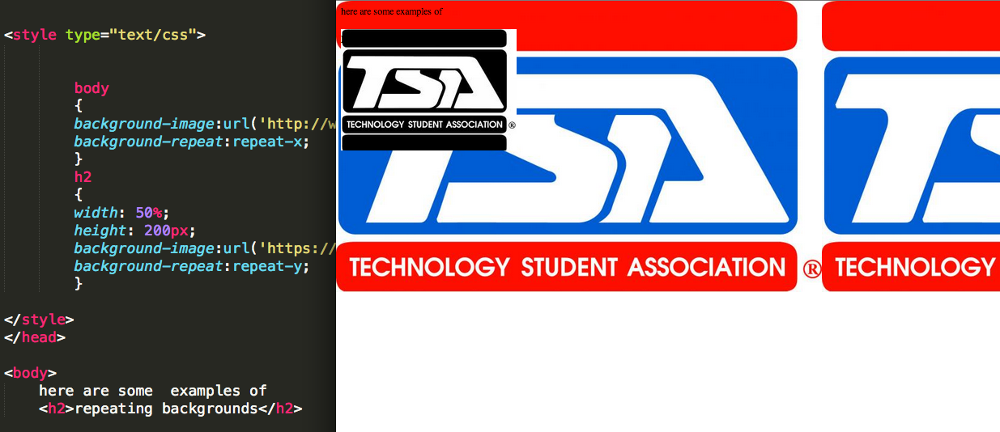

Backgrounds
The Background-Color Property- property that specifies the background color of an element. The background color of a page is denoted in the body selector.
The Background-Image Property- property that specifies an image to use as the background of an element. By default, the image is repeated so it covers the entire element that it is added to. To demonstrate this, we'll use our TSA logo!
Background Image Repeating Horizontally or Vertically- By default, the background-image property repeats an image both horizontally and vertically. Some images should be repeated only horizontally or vertically, or they will look strange. Remember horizontally is x and vertically is y, just like in a graph.
- Repeat- The background image will be repeated both vertically and horizontally. This is default
- repeat-x: The background image will be repeated only horizontally
- repeat-y: The background image will be repeated only vertically
- no-repeat: The background-image will not be repeated
- initial-Sets this property to its default value
- inherit-Inherits this property from its parent element.

Once you become more and more experienced with HTML & it's CSS partner, you will understand why it is very important to know how to use the background property.